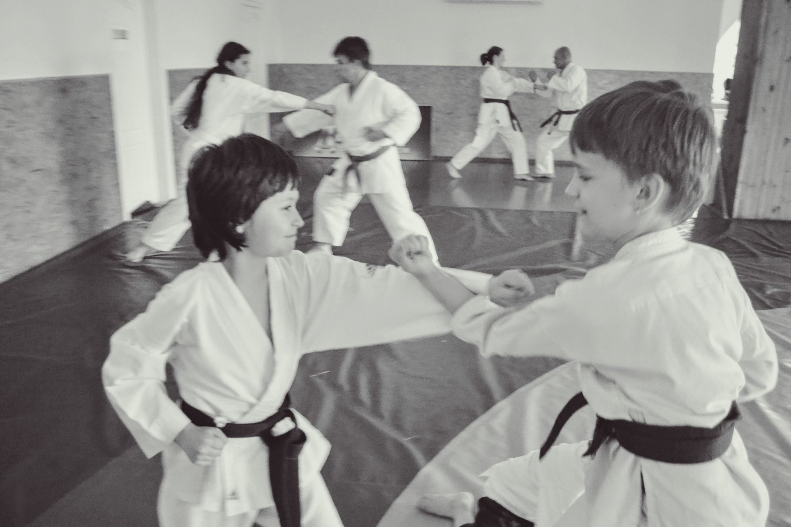
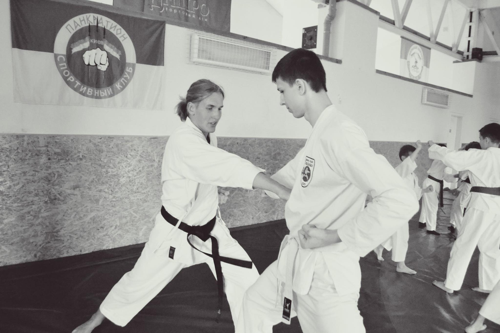
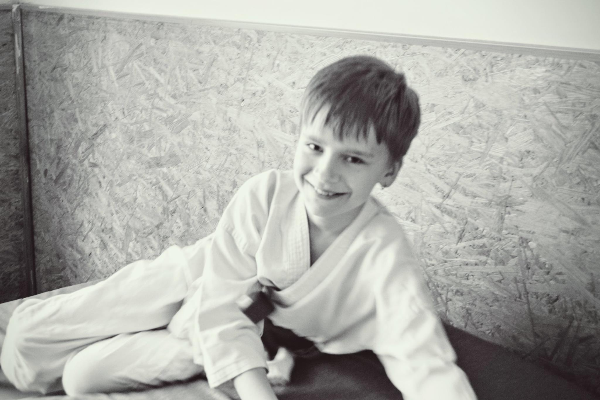

"Кінцева ціль карате не в перемозі, а в удосконаленні характеру. Дух перш ніж техніка"
— Гічин Фунакоши
(засновник найпопулярнішого стилю карате Шотокан, 1943р)
Клуб карате-до “Томиленко” (м. Київ)
- Заснований 1 вересня 2000 року в м. Києві. Основний стиль карате-до, який вивчають в клубі – Шотокан, заснований видатним японським майстром Гічином Фунакоши.
- Основне спортивне направлення – версія SKIF.
- Клуб “Томіленко” є членом Всеукраінскої Федерації Карате-до SKI – U (президент Денисенко С.А. ) и Киівскої федерації карате м. Києва (президент Томіленко О. В.).
- В клубе виховано більше 50 призерів и переможців чемпіонатів міста Києва і України по карате-до.
- Тренування в секції проводять досвідчені тренера, які отримали відповіднну міжнародну атестацію. Інструктори-тренера клубу систематично приймають участь в національних і міжнародних семінарах під керівництвом японського майстра Хіроказу Канадзави, Мабуні Муракамі а також українского майстра карата Денисенко С.А.


